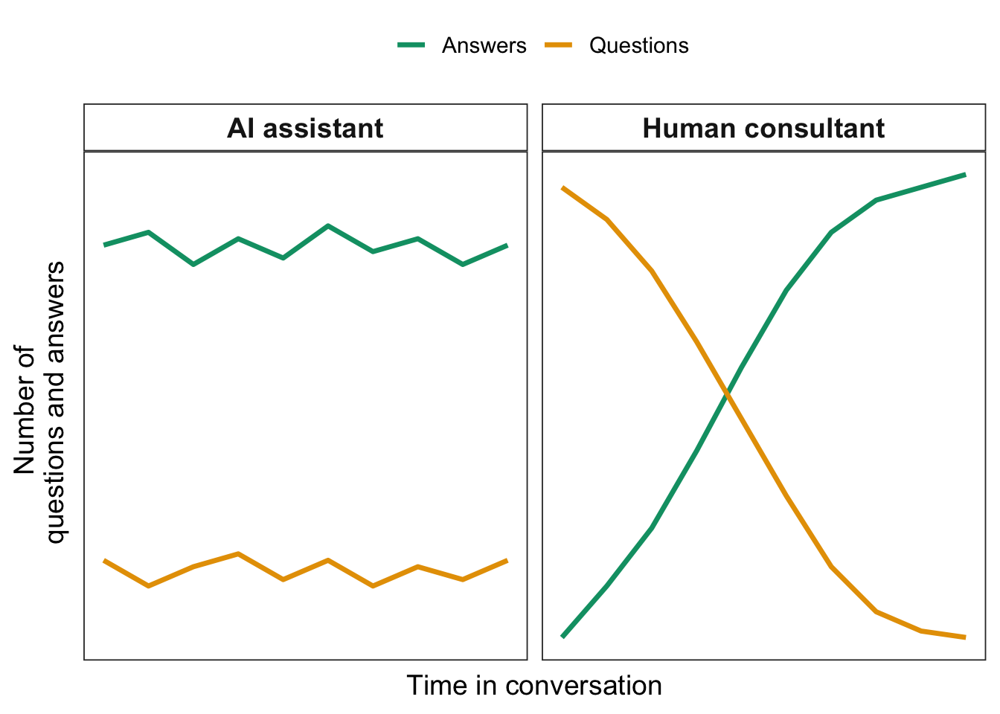

library(tidyverse)
library(readr)
dat <- read_csv(url("https://raw.githubusercontent.com/cbrown5/R-llm-workshop/refs/heads/main/resources/fish-coral-cover-sites.csv"))
head(dat)
summary(dat)6 Github copilot for R
Time: 11:30-12:00pm
I’ll show you how you can most effectively use github copilot to plan, code and write up your data analysis and modelling.
Software requirements: VScode with R and github copilot license + extension for copilot.
Github Copilot calls itself an ‘AI programming assistant’ or an ‘AI pair programmer’. I’ll refer to it as an ‘LLM coding assistant’ or just ‘Assistant’.
Assistants add a layer of software between you and the LLM. The software is doing some hidden interpretation of what you want to do, as well as trying to save costs. For instance, for most assistants we often don’t get to control (or even see) the system message, the temperature or the number of output tokens. The assistant is also guessing context to include in the prompt, so it can automatically give the LLM more context. At the same time it is managing the LLM’s context window and trying to save on costs.
There is no generic name for this type of software (the field is moving to fast to have standardized names). So I’ll refer to them Assistants. In this bucket I’ll also put chatGPT, Claude, Roo Code, Cline and others. Note that Github Copilot (which I’ll call copilot for short) is different to the ‘Copilot’ assistant that is on the web and in the Teams app.
This software is also called ‘chatbots’, however, I prefer assistants as the tasks they can do are much broader than just chatting.
Tip: You’ll get the most of out Github Copilot if you use Visual Studio Code as your development environment (rather than RStudio). Setting up VScode with R can be a bit fiddly, check out my my installation instructions if you have trouble. Web searching advice is also a good idea if you are stuck. Its worth the effort.
Copilot It is developing rapidly, so it is quite likely that when you read this there will be changes and new features.
In this section I’ll focus on showing the main ways you can use copilot. Just be aware the implementation may change in future.
We’ll look at:
- Overview VScode for those that are new to this software
- Best practices for setting up your project directory
- Inline code editing
- Ask mode
- Edit mode
- Agent mode
6.1 Inline code editing
This chapter explores techniques for using GitHub Copilot’s inline code editing capabilities to enhance your R programming workflow.
6.1.1 1. Code completion
This is only option supported in Rstudio (last time I checked).
Assuming you have github copilot set-up you just need to start a new R script (remember to keep it organized and give it a useful name) and start typing. You’ll see suggested code completions appear in grey. Hit tab to complete them.
Let’s read in the benthic site data and fish counts:
Now try create a ggplot of secchi (a measure of water clarity, higher values mean clearer water) and pres.topa (count of topa, the bumphead parrotfish). Start typing gg and see what happens.
You should a recommendation for a ggplot. But it won’t know the variable names.
Tip: Sometimes GC gets stuck in a loop and keeps recommending the same line. To break it out of the loop try typing something new.
6.1.2 2. Using comments
The code completion is using your script and all open scripts in VScode to predict your next line of code. It won’t know the variable names unless you’ve provided that. One way is to include them in the readme.md file and have that open, another is to use comments in the active script (which tends to work more reliably), e.g.
# Make a point plot of secchi against pres.topa
gg...Should get you the write ggplot. Using variable names in your prompts is more precise and will help the LLM guess the right names.
You could also try putting key variable names in comments at the top of your script.
Another way to use autocomplete is not to write R at all, just to write comments and fix the R code. Try templating a series of plots like:
# Make a point plot of secchi against pres.topa with a stat_smooth
# Plot logged (two categories) and pres.topa as a boxplot
# Plot CB_cover (branching coral cover) against secchiNow go back through and click under each line to get the suggestions.
This strategy is great in data wrangling workflows. As a simple example try make this grouped summary using comments only:
dat %>%
group_by(logged) %>%
summarize(mean_topa = mean(pres.topa),
mean_CB = mean(CB_cover))To make this I might write this series of comments:
#group dat by logged
#summarize pres.topa and CB_coverIf the variable names are documented above you can ofter be lazier and less precise with variable names here.
6.1.3 3. Code completion settings
Click the octocat in the bottom right corner of VScode to fine-tune the settings. You can enable/disable code completions (sometimes they are annoying e.g. when writing a workshop!).
You can also enable ‘next edit suggestions’. These are useful if editing an exisiting file. e.g. if you misspelt ‘sechi’ then updated it in one place, it will suggest updates through the script. Hit tab to move through these.
The box will also tell you if indexing is available. Indexing allows AI to search your code faster.
6.1.4 4. Inline code generation
In VScode you can also access an inline chat box with cmd/cntrl-i. This chat can chat as well as edit code.
You can click anywhere and active this. I find it most useful though to select a section of code and then hit cmd/cntrl-i.
This is most useful to - Add new code - Explain code - Fix bugs - Add tests
Try select some of your code (e.g. a ggplot) and ask it to explain what the code does.
Now try select one of your plots and ask for some style changes (e.g. theme, colours, axes label sizes etc…).
Now add a bug into one of your plots. See if the inline chatbox can fix the bug.
6.1.4.1 Prompt shortcuts
Use the / to bring up a list of prompt shortcuts. The most useful in R are /explain, /fix, /tests. Try select some code then use these to see what happens.
6.2 Planning your analysis with Ask mode
6.2.1 Stages of analysis
There are overall decisions you need to make when developing your analysis:
- What types of statistics to use.
- How to implement those statistics in R code.
Its worthwhile separting these two decisions, as they are different issues. One is a science question, the other is a programming question.
When using Assistants its also worthwhile using different chat sessions to try and find answers.
6.2.2 Ask mode
Ask mode helps you plan analysis and implementation, using context from your project.
In VScode click the ‘octocat’ symbol that should be at the top towards the right. This will open the chat window.
The chat panel will appear down the bottom of this new sidebar. Confirm that the chatbot is currently set to ‘Ask’ mode.
Your current file will automatically be included as context for the prompt. You can drag and drop any other files here as well.
Start by asking the chatbot for guidance on a statistical analysis. We are interested in how the abundance of Topa relates to coral cover. For instance you could ask:
How can I test the relationship between pres.topa and CB_cover?Evaluate the quality of its response and we will discuss.
6.2.3 The jagged frontier of LLM progress
LLMs were created to write text. But it soon became apparent that they excel at writing programming code in many different languages.
Since then AI companies have been optimising their training and development for coding and logic.
There are a series of standardized tests that are used to compare quality of LLMs. Common evaluation tests are the SWE benchmark which looks at the ability of LLMs to autonomously create bug fixes. Current models get about 50% resolution on this benchmark.
Their progress on math and logic is a bit more controversial. It seems like some of the math benchmarks (like AIME annual tests for top 5% highschool students) are saturated as LLMs are scoring close to 100% on these tests.. So newer tests of unsolved maths problems are being developed.
However, others are finding that the ability of LLMs on math and logic are overstated, perhaps because the LLMs have been trained on the questions and the answers. Its also clear that AI companies have a strong financial incentive to find ways (real and otherwise) of improving on the benchmarks. Are the moment there is tough competition to be ‘industry leaders’ and grab market share with impressive results on benchmarks.
Either way, it does seem that the current areas of progress are programming, math and logic.
Evaluations on statistics and the R software are less common.
The limited evaluations of LLMs on their ability to identify the correct statistical procedure are less impressive than other benchmarks. An evaluation (published 2025) of several models, including GPT-4 as the most up-to-date model, found accuracy at suggesting the correct statistical test of between 8% and 90%.
In general LLMs were good at choosing descriptive statistics (accuracy of up to 90% for GPT-4). Whereas when choosing inferential tests accuracy was much less impressive - GPT-4 scored between 20% and 43% accuracy on questions for which a contingency table was the correct answer.
The results also indicate the improvements that can be gained through better prompts (i.e. doubling in accuracy for GPT 4).
The lesson is two-fold. Just because LLMs excel at some tasks doesn’t mean they will excel at others. Second, good prompting strategies pay off.
For us in the niche R world there is also another lesson. The LLMs should be good at helping us implement analyses (ie write the R code). However, they are less reliable as statisticians who can guide us on the scientific question of what type of analysis to do.
6.2.4 How to prompt for better statistical advice
The limited number of evaluations of LLMs for statistics have found the biggest improvements for prompts that:
- Include domain knowledge in the prompt
- Include data or summary data in the prompt
- Combine domain knowledge with CoT (but CoT on its own doesn’t help)
In addition, larger and more up-to-date models tend to be better. e.g. try Claude 4.0 over GPT-mini.
6.2.4.1 What LLMs don’t do that real statisticians do…
If you consult a human statistician they’ll usually ask you lots of questions. LLMs, in contrast, will tend to just give you an answer, whether or not they have enough context.
Say you asked me the same question you had in your LLM prompt like “how do see if fish are related to coral”. There’s no way I’d jump in with an answer with so little information. But the LLM will.
So be aware of this shortcoming and come to prompting pre-prepared with the context it will need to give you a better answer.

Figure 1 Comparison of how an experienced human statistical consultant would structure a conversation compared to a typical prompt chain with an AI assistant (figure 1). The human consultant will usually ask more questions than provide answers at the start of a conversation, then switch to providing more answers once they understand the context of the study. An AI assistant will tend to be constant in the number of questions it asks, unless explictly prompted to ask questions rather than provide answers. This means it provides answers without first gathering appropriate context.
6.2.4.2 Guidelines for prompting for statistical advice
Attach domain knowledge Try to find quality written advice from recognized researchers to include in your prompts.
Always provide context on the data For instance, the model will give better advice for the prompt above if we tell it that pres.topa is integer counts (it will probably then recommend poisson GLM straight away). Likewise, if your replicates are different sites, tell that to the model so it has the opportunity to recommend approaches that are appropriate for spatial analysis.
Attach data to your prompts You can attach the whole dataset if its in plain text (e.g. csv). Or write a summary() and/or head() to file and attach that.
Combine the above approaches with Chain of Thought Just add ‘use Chain of Thought reasoning’ to your prompt. Its that easy.
Double-up on chain of thought with self evaluation After the initial suggest try prompts like “are you sure?”, “Take a deep breath, count to ten and think deeply”, “Evaluate the quality of the options on a 1-5 scale”.
Tip: Make a library of reference material for your prompting. If you see vignettes, blogs, or supplemental sections of papers that explain an analysis well, save them as text files to use in prompts.
6.2.4.3 Improving our initial prompt by attaching data
Recall our initial prompt was:
How can I statistically test the relationship between pres.topa and CB_cover?Try some of the strategies above (make a new prompt by clicking the + button) and compare the quality of advice.
For instance, you can save a data summary like this:
write_csv(head(dat), "resources/head-site-level-data.csv")Then drag and drop it into the ask window and add something like:
How can I statistically test the relationship between pres.topa and CB_cover? Here are the first 6 rows of data6.2.4.4 Improving our initial prompt by attaching domain knowledge
You can further improve the response by attaching a trusted resource. e.g. save this webpage on count models for ecology to your computer. Then you can attach the html file. That turned out to be a bit slow to compute (file too large?). Would be better if we had in plain text (e.g. copy and paste the text to a file, or use an extraction tool to extract text from the html).
If you installed the websearch tool (which will likely become default in future) then you could add a prompt like this:
How can I statistically test the relationship between pres.topa and CB_cover? Here are the first 6 rows of data. pres.topa is my response and it is count data. Use @websearch to find robust recommendations for ecologists to analyse count data before proceeding with your recomemndations. That worked well for me. I then followed up with:
Great. Evaluate the robustness of each suggestoin on a 1-10 scaleAnd it gave me a nice summary suggesting to try overdispersion models first (which is a good suggestion).
The absolute best practice would be to give the assistant all the context for your study and observational design. Let’s see how doing that can work in our favour when planning implementation.
6.2.5 Planning implementation
The other main way to use Ask mode is for help in implementing an analysis. Many of our workflows are complex and involve multiple data wrangling steps.
To get the best out of GC I recommend creating a detailed README.md file with project context. Let’s try that and use it to plan our project.
Save the README.md that his here to a local file. (Remember that we are going to be using this as a prompt, so read it first).
Now you can attach it (or open it then click new chat). Given all the context you’ve provided you can just write something simple like:
Help me plan R code to implement this analysis. Or
Help me plan the workflow and scripts to implement this analysisI did this. It suggested both code (that looked approximatley correct) and the directory structure, sticking to my guideline in the readme about being modular.
You should iterative with Ask mode to if there are any refinements you want.
Let’s move onto edit mode to see how to put this plan to action.
6.3 Creating your code with Edit mode
Edit mode will edit files for you. The best way to learn how is to just see it in action.
Open the Chat panel and click the ‘Ask’ button, then select ‘Edit’.
6.3.1 Adding a plan to the readme
Open the README.md. Then type this prompt:
Help me plan the implementation of this project. Add the plan to the ## Steps sectionClick ‘Keep’ if you like what it did. Or you can suggest improvements. Alternatively, accept it for now and then edit it afterwards.
Tip: Sometimes you can’t go back once copilot has made edits to a file. So its good practice to use git and commmit changes before and after editing.
6.3.1.1 Working through your plan
Once you’re happy with the plan, you can get copilot to implement it. You can continue the current chat, or start a new chat to do this (depending on the length of the task).
Now step through, asking copilot to create each file as you.
At this point everyone’s answers will diverge, as there is an element of randomness to the LLM’s responses. We will compare as a class to see if everyone gets to a similar analysis and answer.
Tip: We are using the readme.md is copilot’s memory. This means the assitant always has the context it needs across different chat sessions (where it would otherwise forget). So its important to keep the readme updated. Its also useful to help you remember if you come back to the project some months or years later.
6.3.1.2 Why so much code?
Copilot is designed as a programming assistant. We don’t know its system message, but given the main market for this software is professional programmers, we can guess it has a strong emphasis on programming robust code.
You might notice that copilot tend to ‘over-engineer’ your R scripts. For instance, it has a tendancy to make an if statement to check if each new package needs installing, before loading it.
If you don’t like this style you can add a statement to the readme asking it to keep implementation simple.
6.3.2 Workflows and tips for edit mode
Remember its an assistant, its not doing the project for you. So you need to make sure it stays on track. Left unattended (if you just accept, accept, accept without reading) it can go down rabbit holes. Sometimes it creates superfluous analyses or even incorret statistics.
So here’s how I recommend you use it:
- Use git for version control so you can go back in to older versions.
- Read the suggested edits before accepting
- Keep the readme.md updated and keep attaching it to your prompts. This will help keep it focused on the tasks that matter
- Use a two-step approach to identifying the statistical tests first, then implementing them as R code second. If you conflate these tasks you risk letting copilot guide the stats and getting it wrong.
- You can use it to help implement multiple different types of statistical tests for experimenting. If you do this, I just suggest you still use a two-step approach: plan a list of stats options first, then get copilot to implement them so you can compare results.
NEVER edit the file while copilot is working! To edit files it uses string matching to locate the position to insert the edits. If you change the file it may not find the correct place to insert the new code.
Tip: LLMs will tend to suggest the most obvious statistical analyses. If you want to innovate creative new types of analyses you need to work a bit harder. One way to do this is to mix up your prompts to try and get cross-disciplinary pollination. For instance, you could ask it: “Suggest methods I could use for this analysis, taking inspiriation from different disciplines such as medicine, psychology and climate research”.
6.3.2.1 Suggested workflow for new analyses
Here’s a workflow I’ve found works well if I’m doing an analysis that is new to means
Read the literature to identify the appropriate analysis for the research question and data.
Once I’ve narrowed down the options I look for useful domain knowledge: vignettes, manuals or blogs that have suitable R examples.
Start a new folder, setting up the directory and readme as descriped in this workshop.
Use copilot to implement the analysis, attaching data summaries and the domain knowledge to get the best prompts.
6.3.2.2 Suggested workflow for analyses I know well
Much the same as above, just less planning and you don’t need to search the literature because you know what you want to do. If you save useful domain knowledge when you see it you will also have the documents on hand to support the assistant.
6.4 Automated workflows with Agent mode
Agents are LLMs that have tools that allow them to work autonomously. In effect they review the results of tool use (such as writing code and running code), then respond to those results.
In Copilot’s chat window you can set it to ‘Agent’ mode to enable these features.
After each tool use copilot will ask you to confirm the changes and the next action. At that point you can review its changes, make edits, or continue chatting to suggest refinements.

Agent mode has access to the terminal, so it will be using the terminal application to run scripts it creates. We’ll demonstrate in class so you can understand what its doing.
Image: Agent mode from https://code.visualstudio.com
You can also just accept every suggestion without reading it, also called ‘vibe coding’. However, I don’t recommend doing that, especially when you are starting out. You need to get a feel of how much direction it needs and problems it might create. Without human intervention the algorithms have a tendency to go off task:
Attaching package: 'gridExtra'The following object is masked from 'package:dplyr':
combine
Have a readme with clear steps that you attach as a prompt is also helpful for Agent mode. It helps it stay on topic.
Agent mode also allows installation of additional tools, which we’ll explore later.
6.4.1 Exploring agent mode
Let’s explore Agent mode’s features through some analysis.
6.4.1.1 Motivating example Bayesian time-series analysis
We’ll develop time-series models to forecast rock lobster (Jasus edwardsii) abundance from annual diver surveys. I’ve provided you with summary data. If you want to use this data in your research it is freely available and the original should be downloaded from the AODN portal.
We’ll use the INLA package for our time-series models. We’ll fit it for the first part of the data, then we’ll forecast to the last part. In this way we can test the model’s predictions against data that is independent of model fitting (validation).
The example is based on my study where I asked how accurately we can forecast species abundance change in dynamic environment. In a rapidly changing environment the models we fit to historical data may no longer make accurate predictions to future, novel, environments. So our current models may overstate the future predictability of ecosystems.
In short, the environments we want to predict to in the future have no analogue in contemporary data. This may make accurate prediction more challenging.
To explore this idea I developed a new way of validating time-series. I deliberately designed validations that forced the model fitting to be to older data and the forecasting and accuracy evaluation to be on contemporary data. As such, if the environment has changed the parameters the model has learned from the historical data will no longer be relevant in the contemporary environment.
We found the new method gave much more pessimistic estimates of model accuracy for species that undergo rapid changes. Whereas for species that have resisted environmental change the new method gave comparable results to traditional methods of validation.
In today’s workshop we’ll look at the first step, which is how to fit a model and make forecasts.
We chose Bayesian models with INLA because have several advantages over alternatives:
Allow for complex heirarchical models in a familiar GLMM framework - we have structuring by time and sites to consider
Are computationally fast to run - convenient if you are re-running the model to do cross validation.
Automatically handles gaps in time-series - Our data has a gap in 2003 when funding for monitoring wasn’t available
Straightforward to model non-normal data - we are using counts.
We’ll use INLA to fit auto-regressive order 1 (AR1) models to rock lobster abundance, with a negative binomial distribution. We’ll also use INLA to make forecasts.
Another nice thing about INLA for us is that it has an unusual way of implementing predictions. This tends to trip-up copilot, so we’ll see how to overcome that challenge and get copilot to write correct code.
6.4.1.2 Set-up your project
Set-up a new project, including creating a readme following the structure we used before.
Here’s the link to the data:
library(tidyverse)── Attaching core tidyverse packages ──────────────────────── tidyverse 2.0.0 ──
✔ forcats 1.0.0 ✔ readr 2.1.5
✔ lubridate 1.9.3 ✔ stringr 1.5.1
✔ purrr 1.0.2 ✔ tibble 3.2.1
── Conflicts ────────────────────────────────────────── tidyverse_conflicts() ──
✖ gridExtra::combine() masks dplyr::combine()
✖ dplyr::filter() masks stats::filter()
✖ dplyr::lag() masks stats::lag()
ℹ Use the conflicted package (<http://conflicted.r-lib.org/>) to force all conflicts to become errorsdat <- readr::read_csv(url("https://raw.githubusercontent.com/cbrown5/R-llm-workshop/refs/heads/main/resources/ATRC-RLS-jasus-edwardsii-maria-island.csv"))Rows: 1844 Columns: 9
── Column specification ────────────────────────────────────────────────────────
Delimiter: ","
chr (4): species_name, site_code, protection_status, site
dbl (5): survey_id, total, latitude, longitude, year
ℹ Use `spec()` to retrieve the full column specification for this data.
ℹ Specify the column types or set `show_col_types = FALSE` to quiet this message.You can see the readme.md I used to get started here. I encourage you to write your own to get a feel for how it works and develop your own style.
6.4.1.3 Prompts I used
Once I had the folder and readme set-up here’s the series of prompts I used. I encourage you to explore making your own. I used Claude 4.0 as the model option. I’ve found that GPT occaisonally makes errors with tool use or stuffs up text matching when editing files (meaning it inserts text in the wrong place).
I started a new chat session between each of these prompts. This helps manage the context window. I’m relying on updating the readme.md so Copilot has memory (and I get it to update that).
Start by documenting the directory structure in the readme.mdI'd be most pleased if you can undertake to perform steps 1-2. Document the data variables in the readme when you are done. Tip: There’s no ‘optimal’ prompt, only better prompts. Sometimes the best way to write is the way you are most comfortable writing. You’ll get more out of your brain that way and copilot will end up performing the same.
Ahoy you salty sea dog, we've scrubbed down steps 1 and 2, time for you to raise the sail on step 3!(Ok so that last prompt definitely doesn’t follow the guidelines of being super clear, but I was bored and it seemed to work ok)
It wrote some nice code for step 3, but had some problems with model convergence. At this point I intervened manually and edited the model myself. I didn’t really want it deciding the model structure for me, as I knew what I wanted (below is the model I used FYI). That fixed it and I got it to document the changes then started a new chat.
Note that the Agent changed the default fitting algorithm, which I wasn’t pleased with. So always important to check the details.
simple_model_formula <- total_lobsters ~ 1 +
protection_status +
f(site_numeric, model = "iid") +
f(year, model = "ar1", hyper = ar1_prior)
ar1_model <- inla(
formula = simple_model_formula,
data = train_data,
family = "nbinomial", # Use negative binomial for count data
control.predictor = list(compute = TRUE),
control.compute = list(
dic = TRUE,
waic = TRUE,
cpo = FALSE, # Disable CPO to help convergence
config = FALSE
),
verbose = FALSE
)After fixing the model and updated the readme, here’s the next step:
Alright cobber, take you best shot at step 4That worked, which actually I was expecting it not to work based on prior experience. INLA does predictions as part of model fitting, so you can’t predict(model1) like you can with other packages.. I’ve found that often trips up copilot when it tries to predict directly from the model object. It might be that Claude 4.0 (only came out as I was writing this) now ‘knows’ not to make that mistake.
I tried again with Claude 3.5 (older version) to see if I could fool that one. However, it avoided the problem by writing a custom fitting function (which would need careful checking).
Anyway, the lesson was meant to be to show you how to solve these types of problems by attaching domain knowledge like the FAQ linked above.
Copilot agent did have some problems running Rscript on my computer (used to source R files from terminal). So I added this line to the readme to help it: When using Rscript from terminal be sure to put the script in ““, e.g. Rscript "Scripts/script1.R"
Just step 5 left to go, make me some nice plots using the types of colours that Wes Anderson would choose6.4.1.4 Writing up the project?
You can keep going from here if you like and get agent mode to write up the results it found as an Rmd file. It will use the tables it generates to (hopefully) make accurate interpretations. Pretty soon Copilot will also have vision capabilities (currently available in preview mode as of 2025-05-27). This means it will be able to interpret the figures it creates as well. We’ll see that in action when we look at Roo Code in a bit.
If you do that, as always, don’t take anything for granted. Make sure you check everything and understand the results yourself.
6.4.1.5 Custom intstructions
For heavy agent use you may want to set-up custom instructions. These apply to all prompts in a project. e.g. you could set preference for ggplot2, or tell it how to use Rscript to avoid terminal errors See here for instructions.
6.4.2 Summary
Agent mode can really accelerate your workflow development. But there are some risks. It can also go off track or write excessive amounts of code (over-engineering). Best practices for using Agent mode include:
- Separate science questions (what stats) from implementation stats (what code)
- Understand the stats you want to do, don’t just rely on copilot to get it right
- Checking what it does at is does it, so you can keep it on track
- Giving strong guidelines e.g. through a project readme file.
- Keeping the readme updated to guide copilot
- Report AI use and how it was used in your publications